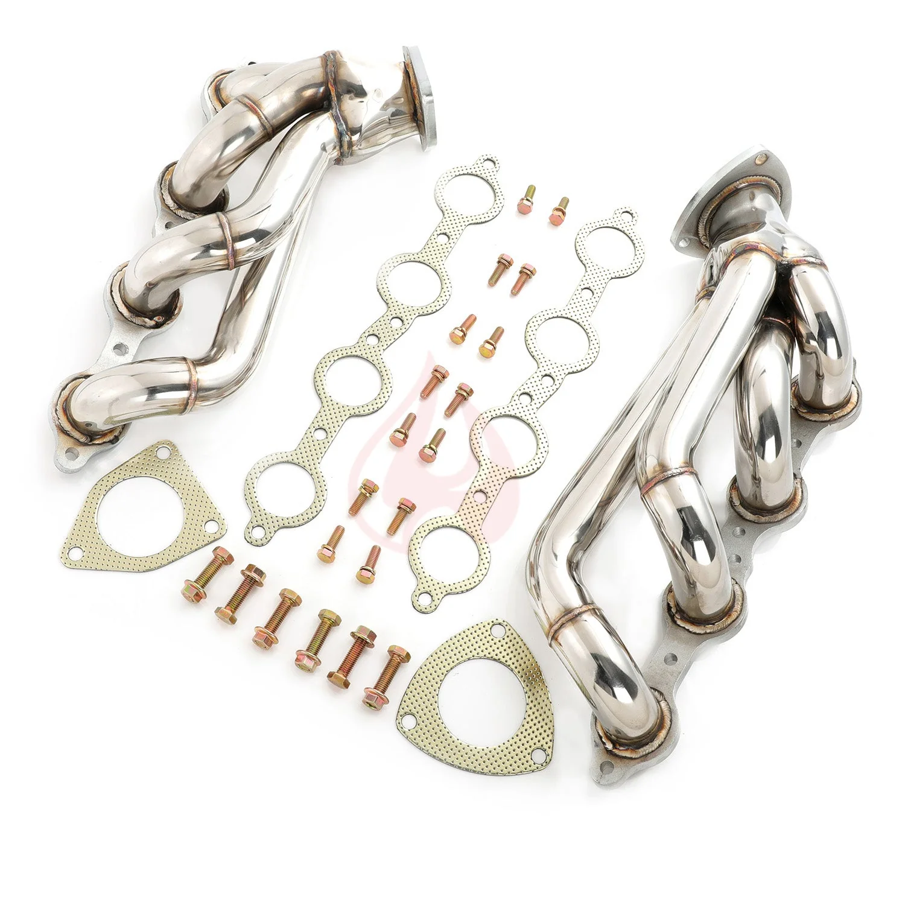

1 / 9Kolektor wydechowy shorty Kompatybilne z 03-06 Chevy GMC Silverado Sierra 1500HD 2500HD Tahoe Yukon Suburban Cadillac Escalade 6.0L V8 FE696120
Aplikacja 2003-2006 Chevrolet Silverado 1500 / 1500 HD / 2500 / 2500 HD / 3500 z 6,0 l 2003-2006 Chevrolet Suburban 1500/Suburban 1500 z 6,0 l 2003-2006 GMC Sierra 1500/1500 HD/2500/2500 HD/3500 z 6,0 l 2003-2006 GMC Yukon/Yukon XL 1500/Yukon XL 2500 z 6,0 l 2003-2006 Cadillac Escalade z 6,0 l Cechy Doskonała jakość i trwałość poprawiająca osiągi pojazdu Krótka konstrukcja zapewniająca wzrost mocy od obrotów biegu j…
Application 2003-2006 Chevrolet Silverado 1500 / 1500 HD / 2500 / 2500 HD / 3500 with 6.0L 2003-2006 Chevrolet Suburban 1500 / Suburban 1500 with 6.0L 2003-2006 GMC Sierra 1500 / 1500 HD / 2500 / 2500 HD / 3500 with 6.0L 2003-2006 GMC Yukon / Yukon XL 1500 / Yukon XL 2500 with 6.0L 2003-2006 Cadillac Escalade with 6.0L Features Excellent quality and durability to improve vehicle performance Shorty design for power gain from idle to mid-range RPM Fully mandrel bent tubes made of high quality 16-gauge 304 stainless steel Head flanges laser-cut from high quality 3/8-inch thick steel plates The flange is flattened by a hydraulic press for precise and leak free sealing All joints are golden color TIG brass style welded to prevent cracking and wear Flanges chrome plated for corrosion resistance Polished surface for extra protection against rusting The accessories in the photos are included 1 year warranty for any manufacturing defect Technical Specifications Header Type: Shorty / Short Tube Primary Diameter: 1-3/4 in. (45mm) Collector Diameter: 2-1/2 in. (64mm) Head Flange Thickness: 3/8 in. (9.5mm) Pipe Thickness: 16 gauge (1.5mm) Material: 304 Stainless Steel Finish: Polished
1499,99 PLN
Opis produktu
Aplikacja
- 2003-2006 Chevrolet Silverado 1500 / 1500 HD / 2500 / 2500 HD / 3500 z 6,0 l
- 2003-2006 Chevrolet Suburban 1500/Suburban 1500 z 6,0 l
- 2003-2006 GMC Sierra 1500/1500 HD/2500/2500 HD/3500 z 6,0 l
- 2003-2006 GMC Yukon/Yukon XL 1500/Yukon XL 2500 z 6,0 l
- 2003-2006 Cadillac Escalade z 6,0 l
Cechy
- Doskonała jakość i trwałość poprawiająca osiągi pojazdu
- Krótka konstrukcja zapewniająca wzrost mocy od obrotów biegu jałowego do średnich obrotów
- Rury w pełni gięte trzpieniowo, wykonane z wysokiej jakości stali nierdzewnej 304 o średnicy 16 mm
- Kołnierze głowicy wycinane laserowo z wysokiej jakości blach stalowych o grubości 3/8 cala
- Kołnierz jest spłaszczany za pomocą prasy hydraulicznej, co zapewnia precyzyjne i szczelne uszczelnienie
- Wszystkie połączenia są spawane metodą TIG w kolorze złotym, aby zapobiec pękaniu i zużyciu
- Kołnierze chromowane, co zapewnia odporność na korozję
- Polerowana powierzchnia dla dodatkowej ochrony przed rdzą
- Akcesoria widoczne na zdjęciach są wliczone w cenę
- 1 rok gwarancji na wszelkie wady produkcyjne
Dane techniczne
- Typ nagłówka:Krótka / Krótka rurka
- Podstawowa średnica:1-3/4 cala (45 mm)
- Średnica kolektora:2-1/2 cala (64 mm)
- Grubość kołnierza głowicy:3/8 cala (9,5 mm)
- Grubość rury:Średnica 16 (1,5 mm)
- Tworzywo:Stal nierdzewna 304
- Skończyć:Błyszczący
Application
- 2003-2006 Chevrolet Silverado 1500 / 1500 HD / 2500 / 2500 HD / 3500 with 6.0L
- 2003-2006 Chevrolet Suburban 1500 / Suburban 1500 with 6.0L
- 2003-2006 GMC Sierra 1500 / 1500 HD / 2500 / 2500 HD / 3500 with 6.0L
- 2003-2006 GMC Yukon / Yukon XL 1500 / Yukon XL 2500 with 6.0L
- 2003-2006 Cadillac Escalade with 6.0L
Features
- Excellent quality and durability to improve vehicle performance
- Shorty design for power gain from idle to mid-range RPM
- Fully mandrel bent tubes made of high quality 16-gauge 304 stainless steel
- Head flanges laser-cut from high quality 3/8-inch thick steel plates
- The flange is flattened by a hydraulic press for precise and leak free sealing
- All joints are golden color TIG brass style welded to prevent cracking and wear
- Flanges chrome plated for corrosion resistance
- Polished surface for extra protection against rusting
- The accessories in the photos are included
- 1 year warranty for any manufacturing defect
Technical Specifications
- Header Type: Shorty / Short Tube
- Primary Diameter: 1-3/4 in. (45mm)
- Collector Diameter: 2-1/2 in. (64mm)
- Head Flange Thickness: 3/8 in. (9.5mm)
- Pipe Thickness: 16 gauge (1.5mm)
- Material: 304 Stainless Steel
- Finish: Polished
FAPO Polska
Ten produkt obsługujemy lokalnie
Autoryzowana obsługa
FAPO Polska prowadzi katalog, kontakt i zamówienia bez odsyłania klienta do zewnętrznych sklepów.
Dobór po aucie
Sprawdzamy dopasowanie produktu do pojazdu, rocznika i wersji przed finalizacją zamówienia.
Wsparcie po zakupie
Masz kontakt w Polsce w sprawach zamówień, wysyłki, gwarancji i zwrotów.